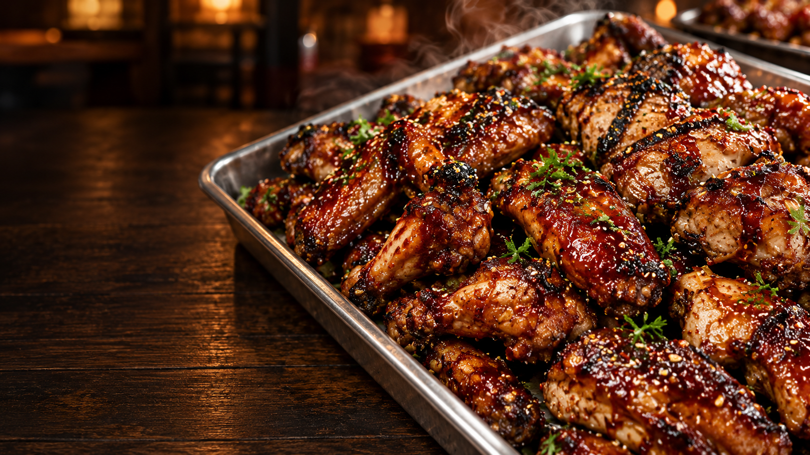
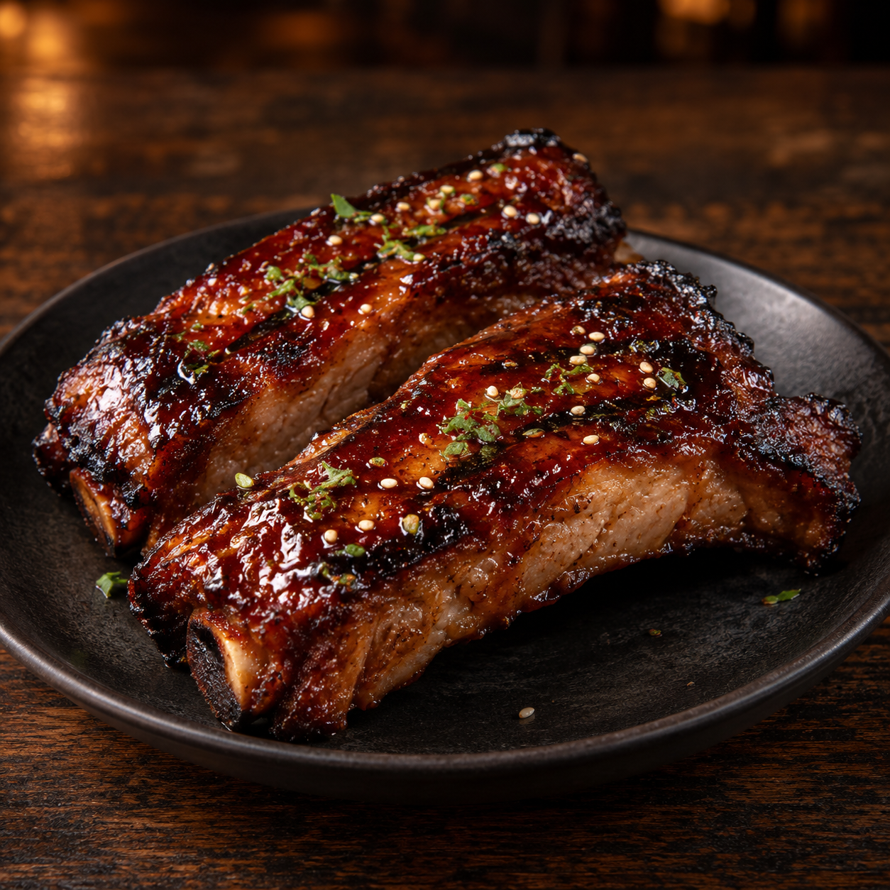

01 / The Grill Poster
GOOD FOOD.
BIG APPETITE.
Explore the menu ↗A. The Grill Poster
Dark, cinematic food-first poster. Condensed impact, concise navigation, intense photography. Strong hero, heavier long-form menu.
The Rib Crib
02 / Around the Table
Bring your
appetite.
And your favourite people.

Meet the menu ↗B. Around the Table SELECTED
Warm, editorial and welcoming. Serif-led storytelling, an arch and inset food print; a menu that is easy to read and explore.
Your next
good plan.
01 Ribs02 Wings03 Platters
Find your feast ↗C. Crib Club
Bold modular red/cream blocks and numbered food categories. Playful, menu-first and graphic; less atmosphere than the selected direction.